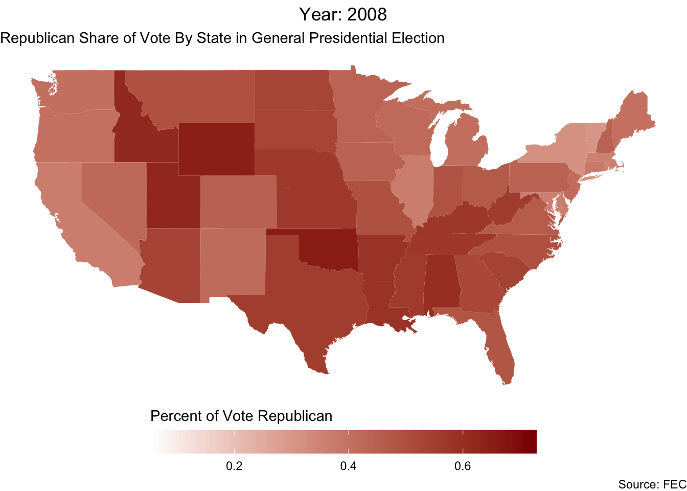
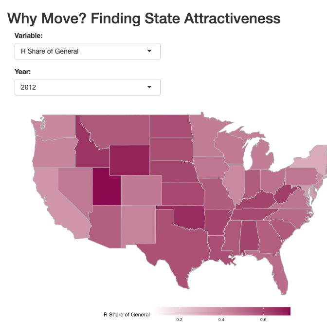

Why Move? Finding State Attractiveness
Project 2
QUESTIONS
This project set out to answer the question “How is interstate migration affected by different socio-economic factors such as state abortion policy, economic status, political culture, and presidential vote?
INTRODUCTION
The variables examined here are state abortion policy, economic status, political culture, and presidential vote in select years.
The dataset “state_immigration_data,” from the US Census, describes the population estimates and margin of errors of populations, per state and year, of people living in the state one year ago, living in the state in the same house one year ago, living in a different state one year ago, and total population. Recorded are the years 2012, 2016, and 2020. This dataset lets us track the population levels of each state over time, based on who lived where one year before being recorded.
The dataset “state_abortion_data,” from the CDC, contains information on the number of abortions per 1000 women in each state in the years 2008, 2012, 2016, and 2020. It also includes information on abortions per 1000 live births and the number of out-of-state abortions. This lets us visualize an important social factor that might motivate people to migrate in or out of their state of residence.
The dataset “presidential_election_data,” from the Federal Election Commission, contains the share of Republican votes in each state per election in 2008, 2012, and 2020. This lets us visualize the political demographics in states, which might motivate interstate migration.
The dataset “state_economic_data,” from the Federal Reserve, contains information on median household income for each state in the years 2008, 2012, 2016, and 2020. This lets us see if there might be economic reasons for interstate migration, in correlation with the other datasets.
The dataset “political_culture_elazar” correlates each state with a culture tag, as theorized by Daniel Elazar in 1966. This will allow us to recognize patterns between state culture and the other variables of our analysis.
The other datasets combine the above variables of interest in different ways for the purpose of building a predictive model.
VISUALIZATIONS

METHODS
We gathered data from the US Census, the CDC, FEC, and the Federal Reserve to obtain our variables of interest. Because one of our variables, partisanship in the presidential election, was limited to election years, we decided to only use data from those years in our other variables as well.
Some datasets originally taken from these websites were very messy, and we had to do a fair amount of data wrangling prior to creating visualizations or interpreting our data. Our datasets were cleaned to include only columns of interest. Generally this included the year, state, explanatory value for our research question, and any related values which we were considering incorporating with our explanatory value (for example, we included both abortions_per_1000_women and abortions_per_1000_live_births in our abortion datatset, as well as data on the number of people who had not moved and total state population in our migration dataset, in case we we decided to us ratios).
All of the values in all of our datasets were converted to numeric form. We removed NA values in some instances, though we did leave some in, especially within the abortion dataset, as we didn’t want to lose other data on entire states when combining datasets later in the process. In the case of political culture, we simply created a new dataset using Daniel Elazar’s culture classifications for each state. As these classifications are constant, there is no year variable in this dataset.
Starting with one dataset for each explanatory and response variable, we used a series of left and full join functions to create one dataset which contained all of our variables of interest. The final columns in our all variables dataset were state, Republican share of the general election, year, political culture, abortions per 1000 women, abortions per 1000 live births, the number of out of state abortions, median household income, total state population, number of people who had not moved states in one year, number of people who had moved states in one year, and the number of people who had not moved for every one person who had.
We used this dataset to create and interpret our logarithmic model, which allowed the coefficient estimates to be better interpreted than a linear model. We chose to use spatial-temporal visualizations for each of the individual variables listed above, using their respective datasets, in order to get a broad idea of how each factor changed over time and by state. A spatial visualization of the US (using the “maps” package) was decided to be the most intuitive option, and shading of each state by the socioeconomic factor in question provided a clear picture of each factor’s variance to between states.
We chose to animate by year rather than facet wrap, as we thought faceting would be too overwhelming to look at. Our shiny app was created to include a visualization of the US with options to select for each socioeconomic factor and year.
INTERPRETATION OF MODELS
# A tibble: 4 × 7
term estimate std_error statistic p_value lower_ci upper_ci
<chr> <dbl> <dbl> <dbl> <dbl> <dbl> <dbl>
1 intercept 7.40 2.33 3.18 0.002 2.78 12.0
2 log(`Median Household … -0.367 0.213 -1.72 0.088 -0.79 0.056
3 log(Abortions_per_1000… 0.033 0.055 0.594 0.554 -0.077 0.142
4 log(`R Share of Genera… -0.28 0.207 -1.36 0.178 -0.691 0.13 The intercept is 7.398, which indicates that in a state with a log Median household income of $0, log 0 abortions per 1000 women, and a 0 percent Republican share of the general election, the expected percentage of the population that comes from a different state is 7.398.
The log estimates are telling as well, for a increase of 1 in log of median household income, there is an associated increase of -0.367 in the number of people from different states entering the state compared to the population in the state at the time, holding all other variables constant.
For log of abortions per 1000 women, the estimate is a minimal change, with a p-value of 0.554, leading us to have little faith in the estimate. The Republican share of the general election has a similar impact to the median household income, but is slightly less pronounced. The p-value for log of Median Household Income is closest to 0.05, meaning that our trust in that prediction is the highest.
# A tibble: 3 × 7
term estimate std_error statistic p_value lower_ci upper_ci
<chr> <dbl> <dbl> <dbl> <dbl> <dbl> <dbl>
1 intercept 40.9 2.39 17.1 0 36.2 45.6
2 political_culture: Mor… -5.44 3.38 -1.61 0.111 -12.1 1.27
3 political_culture: Tra… -3.15 3.49 -0.903 0.369 -10.1 3.78This model was constructed because the other model was unable to account for categorical variables. It is possible that some sort of dummy variable system could be constructed to include the variables in the logarithmic model, but that was not the method we settled on.
The model uses a baseline of individualistic culture. From this baseline we can observe the two conditions. The differences from the baseline are telling, the moralistic cultures have the lowest predicted rate of people from different states moving in, while the traditionalistic states are very similar. Individualistic states are far and above the other two, and has a p-value that leads us to trust the result more than for the other two.
INTERACTIVE DASHBOARD
The dashboard can be accessed by running it in RStudio. A screenshot is pictured below. It can also be accessed by clicking this link: https://jamesono.shinyapps.io/project-02-t1w/

CONCLUSION
We successfully gathered data from online sources regarding various cultural, political, and social factors and used it to create multiple spatial-temporal visualizations illustrating the variation in the selected factors between states, with the goal of identifying patterns in state-to-state migration. We used this data to create spatial temporal visualizations of these socioeconomic factors, a logarithmic model, and a shiny app. We found that political culture played a significant role in people’s decisions to move between states, namely the moralistic culture. Additionally, the log of median household income had a significant negative effect on interstate migration. These findings are consistent with our initial expectations, although the findings are not without their limitations.
Access to more granular demographic data could have been helpful, as it would have allowed for us to determine explanatory effects, as a result of these factors, on interstate migration. Things such as the race or income of the people moving could play a significant role in why people choose to move. There are likely patterns surrounding these demographic variables that range year to year. However, this was a limitation of our research, as the datasets we found did not contain data at that level of specificity for state-to-state migration. Some of the sample sizes were so small that data being free from demographic information meant that individual identities could not be ascertained. The data included numbers of people going from one state to another so specifically that sometimes the numbers were low enough that it could have posed an issue were demographic information included in the data.